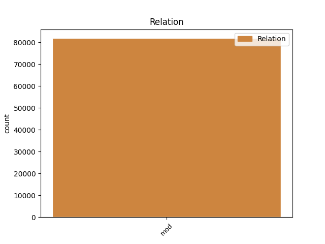
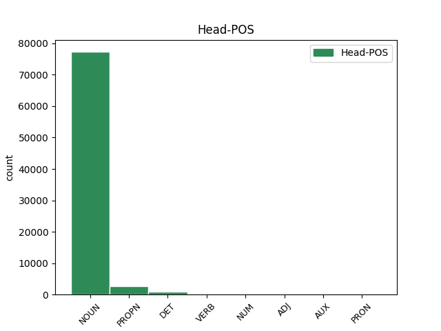
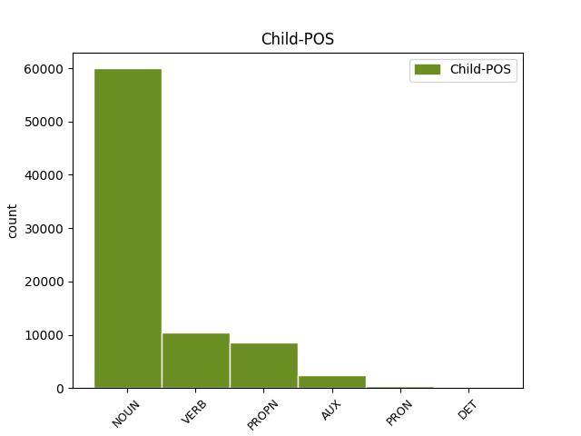

Distribution of features within this leaf



Agreement Rules sorted by frequency.
- When the dependent token is the modifer(mod) of the head token, and the dependent token is NOUN.
1 Proto _ _ _ _ 0 _ _ _
2 je _ _ _ _ 0 _ _ _
3 třeba _ _ _ _ 0 _ _ _
4 připomenout _ _ _ _ 0 _ _ _
5 , _ _ _ _ 0 _ _ _
6 že _ _ _ _ 0 _ _ _
7 riziko riziko NOUN NNNS1-----A---- Case=Nom|Gender=Neut|Number=Sing|Polarity=Pos 0 _ _ _
8 takové _ _ _ _ 0 _ _ _
9 globálně _ _ _ _ 0 _ _ _
10 ničivé _ _ _ _ 0 _ _ _
11 srážky srážka NOUN NNFS2-----A---- Case=Gen|Gender=Fem|Number=Sing|Polarity=Pos 7 mod _ _
12 v _ _ _ _ 0 _ _ _
13 nejbližším _ _ _ _ 0 _ _ _
14 století _ _ _ _ 0 _ _ _
15 je _ _ _ _ 0 _ _ _
16 opravdu _ _ _ _ 0 _ _ _
17 minimální _ _ _ _ 0 _ _ _
18 ; _ _ _ _ 0 _ _ _
1 na _ _ _ _ 0 _ _ _
2 kosmické _ _ _ _ 0 _ _ _
3 střelnici _ _ _ _ 0 _ _ _
4 zvané _ _ _ _ 0 _ _ _
5 sluneční _ _ _ _ 0 _ _ _
6 soustava _ _ _ _ 0 _ _ _
7 to _ _ _ _ 0 _ _ _
8 bude _ _ _ _ 0 _ _ _
9 téměř _ _ _ _ 0 _ _ _
10 jistě _ _ _ _ 0 _ _ _
11 člověk člověk NOUN NNMS1-----A---- Animacy=Anim|Case=Nom|Gender=Masc|Number=Sing|Polarity=Pos 0 _ _ _
12 , _ _ _ _ 0 _ _ _
13 kdo _ _ _ _ 0 _ _ _
14 vytasí vytasit VERB VB-S---3P-AA--- Aspect=Perf|Mood=Ind|Number=Sing|Person=3|Polarity=Pos|Tense=Pres|VerbForm=Fin|Voice=Act 11 mod _ _
15 jako _ _ _ _ 0 _ _ _
16 prvý _ _ _ _ 0 _ _ _
17 . _ _ _ _ 0 _ _ _
1 Teprve _ _ _ _ 0 _ _ _
2 nedávno _ _ _ _ 0 _ _ _
3 vyšlo _ _ _ _ 0 _ _ _
4 najevo _ _ _ _ 0 _ _ _
5 , _ _ _ _ 0 _ _ _
6 že _ _ _ _ 0 _ _ _
7 již _ _ _ _ 0 _ _ _
8 r _ _ _ _ 0 _ _ _
9 . _ _ _ _ 0 _ _ _
10 1981 _ _ _ _ 0 _ _ _
11 pod _ _ _ _ 0 _ _ _
12 dojmem _ _ _ _ 0 _ _ _
13 Alvarezovy _ _ _ _ 0 _ _ _
14 hypotézy _ _ _ _ 0 _ _ _
15 uspořádala _ _ _ _ 0 _ _ _
16 NASA _ _ _ _ 0 _ _ _
17 uzavřené _ _ _ _ 0 _ _ _
18 setkání _ _ _ _ 0 _ _ _
19 astronomů _ _ _ _ 0 _ _ _
20 a _ _ _ _ 0 _ _ _
21 vojenských _ _ _ _ 0 _ _ _
22 odborníků _ _ _ _ 0 _ _ _
23 ve _ _ _ _ 0 _ _ _
24 Snowmass _ _ _ _ 0 _ _ _
25 ve _ _ _ _ 0 _ _ _
26 státě stát NOUN NNIS6-----A---- Animacy=Inan|Case=Loc|Gender=Masc|Number=Sing|Polarity=Pos 0 _ _ _
27 Colorado Colorado PROPN NNNS1-----A---- Case=Nom|Gender=Neut|NameType=Geo|Number=Sing|Polarity=Pos 26 mod _ SpaceAfter=No
28 , _ _ _ _ 0 _ _ _
29 kde _ _ _ _ 0 _ _ _
30 se _ _ _ _ 0 _ _ _
31 diskutovalo _ _ _ _ 0 _ _ _
32 o _ _ _ _ 0 _ _ _
33 týchž _ _ _ _ 0 _ _ _
34 problémech _ _ _ _ 0 _ _ _
35 jako _ _ _ _ 0 _ _ _
36 na _ _ _ _ 0 _ _ _
37 XXI _ _ _ _ 0 _ _ _
38 . _ _ _ _ 0 _ _ _
39 astronomickém _ _ _ _ 0 _ _ _
40 kongresu _ _ _ _ 0 _ _ _
41 v _ _ _ _ 0 _ _ _
42 Buenos _ _ _ _ 0 _ _ _
43 Aires _ _ _ _ 0 _ _ _
44 . _ _ _ _ 0 _ _ _
1 K _ _ _ _ 0 _ _ _
2 detekci _ _ _ _ 0 _ _ _
3 planetek _ _ _ _ 0 _ _ _
4 navrhují _ _ _ _ 0 _ _ _
5 totiž _ _ _ _ 0 _ _ _
6 použít _ _ _ _ 0 _ _ _
7 výkonných _ _ _ _ 0 _ _ _
8 radiolokátorů radiolokátor NOUN NNIP2-----A---- Animacy=Inan|Case=Gen|Gender=Masc|Number=Plur|Polarity=Pos 0 _ _ _
9 na _ _ _ _ 0 _ _ _
10 oběžné _ _ _ _ 0 _ _ _
11 dráze _ _ _ _ 0 _ _ _
12 kolem _ _ _ _ 0 _ _ _
13 Země _ _ _ _ 0 _ _ _
14 , _ _ _ _ 0 _ _ _
15 které _ _ _ _ 0 _ _ _
16 budou být AUX VB-P---3F-AA--- Mood=Ind|Number=Plur|Person=3|Polarity=Pos|Tense=Fut|VerbForm=Fin|Voice=Act 8 mod _ _
17 nepřetržitě _ _ _ _ 0 _ _ _
18 " _ _ _ _ 0 _ _ _
19 pročesávat _ _ _ _ 0 _ _ _
20 " _ _ _ _ 0 _ _ _
21 kosmický _ _ _ _ 0 _ _ _
22 prostor _ _ _ _ 0 _ _ _
23 až _ _ _ _ 0 _ _ _
24 do _ _ _ _ 0 _ _ _
25 vzdálenosti _ _ _ _ 0 _ _ _
26 100 _ _ _ _ 0 _ _ _
27 miliónů _ _ _ _ 0 _ _ _
28 km _ _ _ _ 0 _ _ _
29 od _ _ _ _ 0 _ _ _
30 Země _ _ _ _ 0 _ _ _
31 . _ _ _ _ 0 _ _ _
1 Právě _ _ _ _ 0 _ _ _
2 ono on PRON PPNS1--3------- Case=Nom|Gender=Neut|Number=Sing|Person=3|PronType=Prs 4 mod _ LId=on-1
3 nedávné _ _ _ _ 0 _ _ _
4 přiblížení přiblížení NOUN NNNS1-----A---- Case=Nom|Gender=Neut|Number=Sing|Polarity=Pos 0 _ _ _
5 k _ _ _ _ 0 _ _ _
6 Zemi _ _ _ _ 0 _ _ _
7 pozměnilo _ _ _ _ 0 _ _ _
8 její _ _ _ _ 0 _ _ _
9 dráhu _ _ _ _ 0 _ _ _
10 tak _ _ _ _ 0 _ _ _
11 , _ _ _ _ 0 _ _ _
12 že _ _ _ _ 0 _ _ _
13 při _ _ _ _ 0 _ _ _
14 příštích _ _ _ _ 0 _ _ _
15 setkáních _ _ _ _ 0 _ _ _
16 bude _ _ _ _ 0 _ _ _
17 od _ _ _ _ 0 _ _ _
18 Země _ _ _ _ 0 _ _ _
19 podstatně _ _ _ _ 0 _ _ _
20 dále _ _ _ _ 0 _ _ _
21 než _ _ _ _ 0 _ _ _
22 r _ _ _ _ 0 _ _ _
23 . _ _ _ _ 0 _ _ _
24 1992 _ _ _ _ 0 _ _ _
25 . _ _ _ _ 0 _ _ _
1 Armáda _ _ _ _ 0 _ _ _
2 svou svůj DET P8FS4---------1 Case=Acc|Gender=Fem|Number=Sing|Poss=Yes|PronType=Prs|Reflex=Yes 3 mod _ LGloss=(přivlast.)|LId=svůj-1
3 strukturou struktura NOUN NNFS7-----A---- Case=Ins|Gender=Fem|Number=Sing|Polarity=Pos 0 _ _ _
4 agresivitu _ _ _ _ 0 _ _ _
5 netlumí _ _ _ _ 0 _ _ _
6 , _ _ _ _ 0 _ _ _
7 pouze _ _ _ _ 0 _ _ _
8 přenáší _ _ _ _ 0 _ _ _
9 z _ _ _ _ 0 _ _ _
10 vyšších _ _ _ _ 0 _ _ _
11 na _ _ _ _ 0 _ _ _
12 nižší _ _ _ _ 0 _ _ _
13 a _ _ _ _ 0 _ _ _
14 z _ _ _ _ 0 _ _ _
15 těch _ _ _ _ 0 _ _ _
16 na _ _ _ _ 0 _ _ _
17 nepřítele _ _ _ _ 0 _ _ _
18 či _ _ _ _ 0 _ _ _
19 nepřátelské _ _ _ _ 0 _ _ _
20 civilní _ _ _ _ 0 _ _ _
21 obyvatelstvo _ _ _ _ 0 _ _ _
22 . _ _ _ _ 0 _ _ _
Disagree Examples:
1 Přenosová _ _ _ _ 0 _ _ _
2 rychlost _ _ _ _ 0 _ _ _
3 přístroje _ _ _ _ 0 _ _ _
4 pro _ _ _ _ 0 _ _ _
5 telefonní _ _ _ _ 0 _ _ _
6 faksimile _ _ _ _ 0 _ _ _
7 , _ _ _ _ 0 _ _ _
8 tak _ _ _ _ 0 _ _ _
9 se _ _ _ _ 0 _ _ _
10 správně _ _ _ _ 0 _ _ _
11 nazývá _ _ _ _ 0 _ _ _
12 zařízení zařízení NOUN NNNS1-----A---- Case=Nom|Gender=Neut|Number=Sing|Polarity=Pos 0 _ _ _
13 , _ _ _ _ 0 _ _ _
14 o _ _ _ _ 0 _ _ _
15 kterém _ _ _ _ 0 _ _ _
16 dnes _ _ _ _ 0 _ _ _
17 píšeme psát VERB VB-P---1P-AA--- Mood=Ind|Number=Plur|Person=1|Polarity=Pos|Tense=Pres|VerbForm=Fin|Voice=Act 12 mod _ SpaceAfter=No
18 , _ _ _ _ 0 _ _ _
19 je _ _ _ _ 0 _ _ _
20 sice _ _ _ _ 0 _ _ _
21 zajímavý _ _ _ _ 0 _ _ _
22 parametr _ _ _ _ 0 _ _ _
23 pro _ _ _ _ 0 _ _ _
24 posouzení _ _ _ _ 0 _ _ _
25 jeho _ _ _ _ 0 _ _ _
26 vlastností _ _ _ _ 0 _ _ _
27 , _ _ _ _ 0 _ _ _
28 ale _ _ _ _ 0 _ _ _
29 má _ _ _ _ 0 _ _ _
30 z _ _ _ _ 0 _ _ _
31 uživatelského _ _ _ _ 0 _ _ _
32 hlediska _ _ _ _ 0 _ _ _
33 omezený _ _ _ _ 0 _ _ _
34 význam _ _ _ _ 0 _ _ _
35 . _ _ _ _ 0 _ _ _
1 Přenosová _ _ _ _ 0 _ _ _
2 rychlost _ _ _ _ 0 _ _ _
3 přístroje _ _ _ _ 0 _ _ _
4 pro _ _ _ _ 0 _ _ _
5 telefonní _ _ _ _ 0 _ _ _
6 faksimile _ _ _ _ 0 _ _ _
7 , _ _ _ _ 0 _ _ _
8 tak _ _ _ _ 0 _ _ _
9 se _ _ _ _ 0 _ _ _
10 správně _ _ _ _ 0 _ _ _
11 nazývá _ _ _ _ 0 _ _ _
12 zařízení _ _ _ _ 0 _ _ _
13 , _ _ _ _ 0 _ _ _
14 o _ _ _ _ 0 _ _ _
15 kterém _ _ _ _ 0 _ _ _
16 dnes _ _ _ _ 0 _ _ _
17 píšeme _ _ _ _ 0 _ _ _
18 , _ _ _ _ 0 _ _ _
19 je _ _ _ _ 0 _ _ _
20 sice _ _ _ _ 0 _ _ _
21 zajímavý _ _ _ _ 0 _ _ _
22 parametr _ _ _ _ 0 _ _ _
23 pro _ _ _ _ 0 _ _ _
24 posouzení posouzení NOUN NNNS4-----A---- Case=Acc|Gender=Neut|Number=Sing|Polarity=Pos 0 _ _ _
25 jeho _ _ _ _ 0 _ _ _
26 vlastností vlastnost NOUN NNFP2-----A---- Case=Gen|Gender=Fem|Number=Plur|Polarity=Pos 24 mod _ SpaceAfter=No
27 , _ _ _ _ 0 _ _ _
28 ale _ _ _ _ 0 _ _ _
29 má _ _ _ _ 0 _ _ _
30 z _ _ _ _ 0 _ _ _
31 uživatelského _ _ _ _ 0 _ _ _
32 hlediska _ _ _ _ 0 _ _ _
33 omezený _ _ _ _ 0 _ _ _
34 význam _ _ _ _ 0 _ _ _
35 . _ _ _ _ 0 _ _ _
1 Přístroje _ _ _ _ 0 _ _ _
2 , _ _ _ _ 0 _ _ _
3 vybavené _ _ _ _ 0 _ _ _
4 touto _ _ _ _ 0 _ _ _
5 funkcí _ _ _ _ 0 _ _ _
6 , _ _ _ _ 0 _ _ _
7 člení _ _ _ _ 0 _ _ _
8 předávanou _ _ _ _ 0 _ _ _
9 zprávu _ _ _ _ 0 _ _ _
10 na _ _ _ _ 0 _ _ _
11 bloky _ _ _ _ 0 _ _ _
12 , _ _ _ _ 0 _ _ _
13 obvykle _ _ _ _ 0 _ _ _
14 jednotlivé _ _ _ _ 0 _ _ _
15 řádky _ _ _ _ 0 _ _ _
16 , _ _ _ _ 0 _ _ _
17 a _ _ _ _ 0 _ _ _
18 v _ _ _ _ 0 _ _ _
19 případě _ _ _ _ 0 _ _ _
20 rušení _ _ _ _ 0 _ _ _
21 na _ _ _ _ 0 _ _ _
22 lince _ _ _ _ 0 _ _ _
23 opakují _ _ _ _ 0 _ _ _
24 přenos přenos NOUN NNIS4-----A---- Animacy=Inan|Case=Acc|Gender=Masc|Number=Sing|Polarity=Pos 0 _ _ _
25 porušených _ _ _ _ 0 _ _ _
26 bloků blok NOUN NNIP2-----A---- Animacy=Inan|Case=Gen|Gender=Masc|Number=Plur|Polarity=Pos 24 mod _ _
27 tak _ _ _ _ 0 _ _ _
28 dlouho _ _ _ _ 0 _ _ _
29 , _ _ _ _ 0 _ _ _
30 až _ _ _ _ 0 _ _ _
31 jsou _ _ _ _ 0 _ _ _
32 všechna _ _ _ _ 0 _ _ _
33 data _ _ _ _ 0 _ _ _
34 předána _ _ _ _ 0 _ _ _
35 správně _ _ _ _ 0 _ _ _
36 . _ _ _ _ 0 _ _ _
1 Vynaložené _ _ _ _ 0 _ _ _
2 peníze _ _ _ _ 0 _ _ _
3 se _ _ _ _ 0 _ _ _
4 vám _ _ _ _ 0 _ _ _
5 brzo _ _ _ _ 0 _ _ _
6 vrátí _ _ _ _ 0 _ _ _
7 v _ _ _ _ 0 _ _ _
8 úspoře úspora NOUN NNFS6-----A---- Case=Loc|Gender=Fem|Number=Sing|Polarity=Pos 0 _ _ _
9 poplatků poplatek NOUN NNIP2-----A---- Animacy=Inan|Case=Gen|Gender=Masc|Number=Plur|Polarity=Pos 8 mod _ _
10 za _ _ _ _ 0 _ _ _
11 telefonáty _ _ _ _ 0 _ _ _
12 , _ _ _ _ 0 _ _ _
13 kterými _ _ _ _ 0 _ _ _
14 žádáte _ _ _ _ 0 _ _ _
15 odesílatele _ _ _ _ 0 _ _ _
16 o _ _ _ _ 0 _ _ _
17 opakované _ _ _ _ 0 _ _ _
18 zaslání _ _ _ _ 0 _ _ _
19 faxu _ _ _ _ 0 _ _ _
20 , _ _ _ _ 0 _ _ _
21 protože _ _ _ _ 0 _ _ _
22 ten _ _ _ _ 0 _ _ _
23 , _ _ _ _ 0 _ _ _
24 který _ _ _ _ 0 _ _ _
25 jste _ _ _ _ 0 _ _ _
26 právě _ _ _ _ 0 _ _ _
27 dostali _ _ _ _ 0 _ _ _
28 , _ _ _ _ 0 _ _ _
29 je _ _ _ _ 0 _ _ _
30 nečitelný _ _ _ _ 0 _ _ _
31 . _ _ _ _ 0 _ _ _
1 Vynaložené _ _ _ _ 0 _ _ _
2 peníze _ _ _ _ 0 _ _ _
3 se _ _ _ _ 0 _ _ _
4 vám _ _ _ _ 0 _ _ _
5 brzo _ _ _ _ 0 _ _ _
6 vrátí _ _ _ _ 0 _ _ _
7 v _ _ _ _ 0 _ _ _
8 úspoře _ _ _ _ 0 _ _ _
9 poplatků _ _ _ _ 0 _ _ _
10 za _ _ _ _ 0 _ _ _
11 telefonáty _ _ _ _ 0 _ _ _
12 , _ _ _ _ 0 _ _ _
13 kterými _ _ _ _ 0 _ _ _
14 žádáte _ _ _ _ 0 _ _ _
15 odesílatele _ _ _ _ 0 _ _ _
16 o _ _ _ _ 0 _ _ _
17 opakované _ _ _ _ 0 _ _ _
18 zaslání _ _ _ _ 0 _ _ _
19 faxu _ _ _ _ 0 _ _ _
20 , _ _ _ _ 0 _ _ _
21 protože _ _ _ _ 0 _ _ _
22 ten ten DET PDYS1---------- Case=Nom|Gender=Masc|Number=Sing|PronType=Dem 0 _ _ _
23 , _ _ _ _ 0 _ _ _
24 který _ _ _ _ 0 _ _ _
25 jste být AUX VB-P---2P-AA--- Mood=Ind|Number=Plur|Person=2|Polarity=Pos|Tense=Pres|VerbForm=Fin|Voice=Act 22 mod _ _
26 právě _ _ _ _ 0 _ _ _
27 dostali _ _ _ _ 0 _ _ _
28 , _ _ _ _ 0 _ _ _
29 je _ _ _ _ 0 _ _ _
30 nečitelný _ _ _ _ 0 _ _ _
31 . _ _ _ _ 0 _ _ _